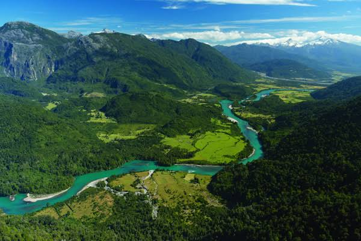
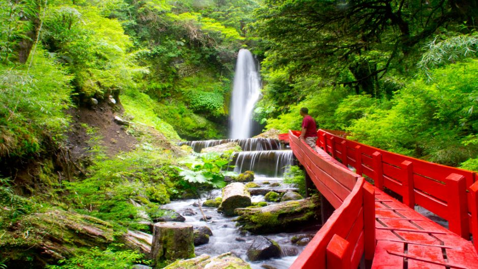

Lo que nos importa
EcoRuta es una plataforma dedicada a conectar a las personas con la naturaleza de La Araucanía a través del senderismo responsable.
Creemos que explorar nuestros paisajes no debe significar dejar huella, por eso cada ruta que compartimos está pensada para minimizar el impacto ambiental y maximizar la experiencia.
Nuestro enfoque sustentable se basa en tres pilares: respeto por los ecosistemas nativos, apoyo a las comunidades locales y educación ambiental
Al recorrer nuestros senderos, contribuyes directamente a la conservación de bosques centenarios, volcanes y lagos que hacen única a esta región.
¿Qué encontraras?
La Araucanía nos regala más de 24 rutas activas distribuidas en 6 comunas, cada una con su propio carácter y desafío.
Desde bosques nativos hasta cumbres nevadas, desde ríos turquesa hasta cascadas escondidas, hay un sendero esperando por cada tipo de explorador.


